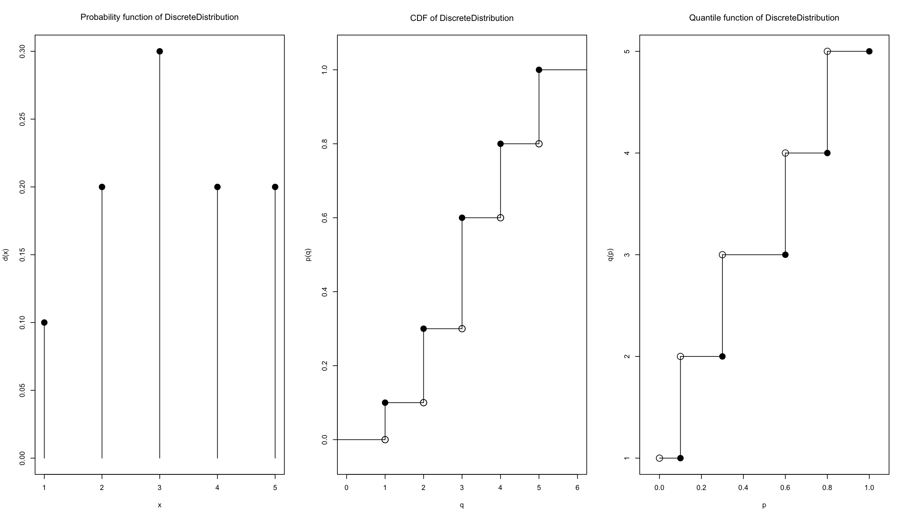
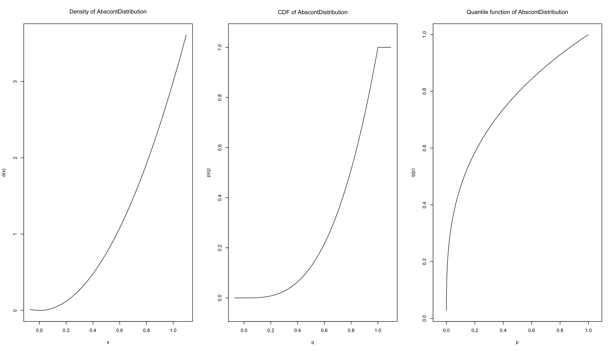
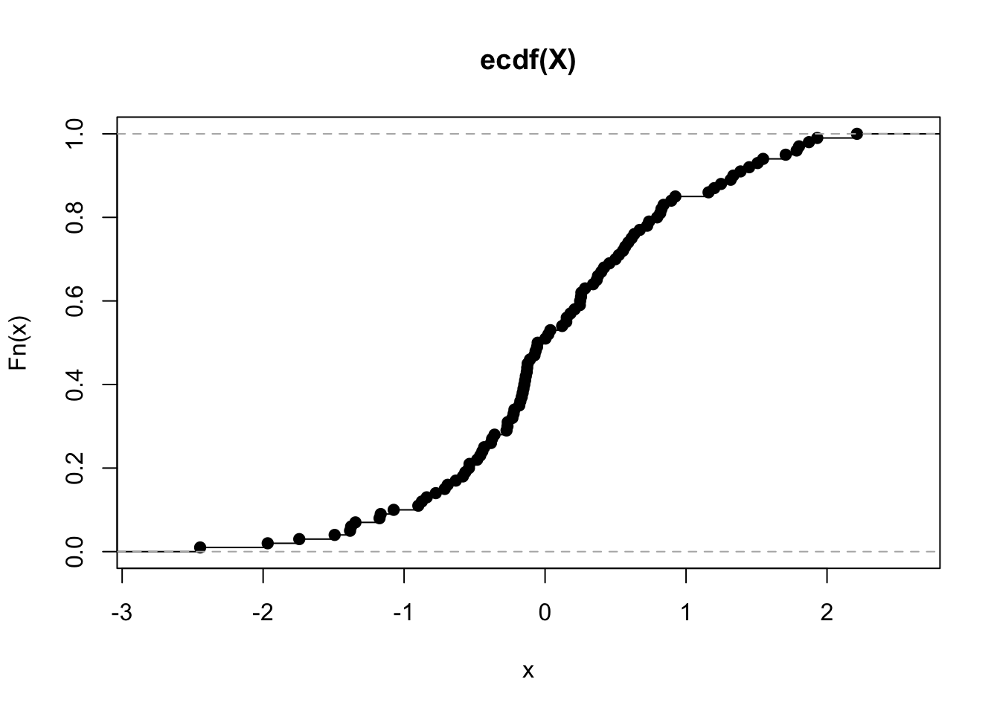
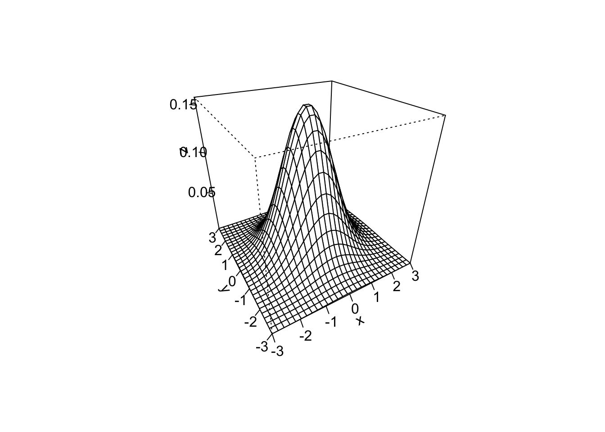

library(prob)
library(distr)
X <- Binom(size = 3, prob = 1/2)
X## Distribution Object of Class: Binom
## size: 3
## prob: 0.5d(X)(1) # pmf of X evaluated at x = 1## [1] 0.375p(X)(2) # cdf of X evaluated at x = 2## [1] 0.875library(distrEx)
E(X)## [1] 1.5var(X)## [1] 0.75sd(X)## [1] 0.8660254E(5*X+3)## [1] 10.5var(5*X+3)## [1] 18.75X <- Binom(size = 3, prob = 0.6)
Y <- 3*X+2
Y## Distribution Object of Class: AffLinLatticeDistributionX <- Norm(mean = 0, sd = 1)
Y <- 3*X+2
Y## Distribution Object of Class: Norm
## mean: 2
## sd: 3library(pracma)
detach("package:pracma", unload = TRUE)
X <- Norm(mean = 0, sd = 1)
Y <- X^2
Y## Distribution Object of Class: AbscontDistributionX <- Norm(mean = 0, sd = 1)
Y <- X^2
Y## Distribution Object of Class: AbscontDistributionp(Y)(0.5)## [1] 0.5204999Z <- Chisq(df = 1)
p(Z)(0.5)## [1] 0.5204999Definition: The quantile function of a random variable \(X\) is the inverse of its cumulative distribution function: \[Q_X(p)=\min \{ x: F_X(x)\geq p\},\ 0< p<1.\] Definition: The empirical cumulative distribution function \(F_n\) (written ECDF) is the probability distribution that places probability mass \(\dfrac{1}{n}\) on each of the values \(x_1, x_2 , \dots , x_n\). The empirical PMF takes the form \[f_X(x)=\dfrac{1}{n}, \ x\in (x_1, x_2 , \dots , x_n).\] If the value \(x_i\) is repeated \(k\) times, the mass at \(x_i\) is accumulated to \(\dfrac{k}{n}\).
distr and distrExlibrary(distr)
library(distrEx)
# simple discrete distribution
D2 <- DiscreteDistribution(supp = c(1:5), prob = c(0.1, 0.2, 0.3, 0.2, 0.2))
D2## Distribution Object of Class: DiscreteDistributionplot(D2)
f <- function(x) 3 * x^2
X <- AbscontDistribution(d = f, low1 = 0, up1 = 1)
plot(X)
p(X)(Inf)## [1] 1p(X)(0)## [1] 0E(X)## [1] 0.7496337X <- rnorm(100) # X is a sample of 100 normally distributed random variables
ECDF <- ecdf(X) # ECDF is a function giving the empirical CDF of X
plot(ECDF)
S <- rolldie(2, makespace = TRUE)
S <- addrv(S, FUN = sum, invars = c("X1", "X2"),
name = "U")
S <- addrv(S, FUN = min, invars = c("X1", "X2"),
name = "V")
head(S)## X1 X2 U V probs
## 1 1 1 2 1 0.02777778
## 2 2 1 3 1 0.02777778
## 3 3 1 4 1 0.02777778
## 4 4 1 5 1 0.02777778
## 5 5 1 6 1 0.02777778
## 6 6 1 7 1 0.02777778JointD <- marginal(S, vars = c("U", "V"))
head(JointD)## U V probs
## 1 2 1 0.02777778
## 2 3 1 0.05555556
## 3 4 1 0.05555556
## 4 5 1 0.05555556
## 5 6 1 0.05555556
## 6 7 1 0.05555556xtabs(round(probs, 3) ~ U + V, data = JointD)## V
## U 1 2 3 4 5 6
## 2 0.028 0.000 0.000 0.000 0.000 0.000
## 3 0.056 0.000 0.000 0.000 0.000 0.000
## 4 0.056 0.028 0.000 0.000 0.000 0.000
## 5 0.056 0.056 0.000 0.000 0.000 0.000
## 6 0.056 0.056 0.028 0.000 0.000 0.000
## 7 0.056 0.056 0.056 0.000 0.000 0.000
## 8 0.000 0.056 0.056 0.028 0.000 0.000
## 9 0.000 0.000 0.056 0.056 0.000 0.000
## 10 0.000 0.000 0.000 0.056 0.028 0.000
## 11 0.000 0.000 0.000 0.000 0.056 0.000
## 12 0.000 0.000 0.000 0.000 0.000 0.028marginal(JointD, vars = "U")## U probs
## 1 2 0.02777778
## 2 3 0.05555556
## 3 4 0.08333333
## 4 5 0.11111111
## 5 6 0.13888889
## 6 7 0.16666667
## 7 8 0.13888889
## 8 9 0.11111111
## 9 10 0.08333333
## 10 11 0.05555556
## 11 12 0.02777778library(mvtnorm)
x <- y <- seq(from = -3, to = 3, length.out = 30)
f <- function(x, y) dmvnorm(cbind(x, y), mean = c(0, 0),
sigma = diag(2))
z <- outer(x, y, FUN = f)
persp(x, y, z, theta = -30, phi = 30, ticktype = "detailed")
f<-expression(x^3+2*x+3)
d<-D(f,'x')
d## 3 * x^2 + 2d1<-D(D(f,'x'),'x')
d1## 3 * (2 * x)f<-expression(x^2+y^2+2*x*y-3*x+4*y+4)
D1=D(f,'x')
D1## 2 * x + 2 * y - 3f<-expression(x^2+y^2+2*x*y-3*x+4*y+4)
D2=D(f,'y')
D2## 2 * y + 2 * x + 4exp<- expression(sin(cos(x + y^2)))
dx<-D(exp,'x');dx## -(cos(cos(x + y^2)) * sin(x + y^2))dy<-D(exp,'y'); dy## -(cos(cos(x + y^2)) * (sin(x + y^2) * (2 * y)))func<-function(x)(x^3+2*x^2+3*x+9)
I<-integrate(func,lower=0,upper=3)
I## 78.75 with absolute error < 8.7e-13integrate(dnorm, -1.96, 1.96)## 0.9500042 with absolute error < 1e-11integrate(dnorm, -Inf, Inf)## 1 with absolute error < 9.4e-05Evaluate \[\int_{0}^{0.5}\int_{0}^{0.5}\int_{0}^{0.5}\dfrac{2}{3}\left(x^2+y^2+z^2 \right)\ dx\,dy\,dz.\]
library(cubature)
f <- function(x) { 2/3 * (x[1] + x[2] + x[3]) }
# "x" is vector x[1], x[2], x[3] are referring to x1, x2 and x3 respectively.
adaptIntegrate(f, lowerLimit = c(0, 0, 0), upperLimit = c(0.5, 0.5, 0.5))## $integral
## [1] 0.0625
##
## $error
## [1] 1.387779e-17
##
## $functionEvaluations
## [1] 33
##
## $returnCode
## [1] 0## a slowly-convergent integral
integrand <- function(x) {1/((x+1)*sqrt(x))}
integrate(integrand, lower = 0, upper = Inf)## 3.141593 with absolute error < 2.7e-05Evaluate \[\int_0^1\int_0^1 \cos{x} \cos{y}\ dx\,dy.\]
library('pracma')
fun <- function(x, y) cos(x) * cos(y)
integral2(fun, 0, 1, 0, 1, reltol = 1e-10)## $Q
## [1] 0.7080734
##
## $error
## [1] 0Evaluate \[\int_{x=0}^{1}\int_{y=0}^{\sqrt{1-x^2}} \sqrt{1-x^2-y^2} \ dy\,dx.\]
f <- function(x, y) sqrt(1 -x^2 - y^2)
xmin <- 0; xmax <- 1
ymin <- 0; ymax <- function(x) sqrt(1 - x^2)
I <- integral2(f, xmin, xmax, ymin, ymax)
I$Q## [1] 0.5236076I <- integral2(f, 0,pi/2, 0,1, sector = TRUE)
I$Q## [1] 0.5236226Integrate \(\dfrac{1}{ \sqrt{x + y}(1 + x + y)^2 }\) over the triangle \(0\leq x \leq 1,\ 0\leq y\leq 1 - x\). Note that the integrand is infinite at \((0,0)\).
f <- function(x,y) 1/( sqrt(x + y) * (1 + x + y)^2 )
ymax <- function(x) 1 - x
I <- integral2(f, 0,1, 0,ymax)
I$Q + 1/2 - pi/4 ## [1] -3.247091e-08## Compute this integral as a sector
rmax <- function(theta) 1/(sin(theta) + cos(theta))
I <- integral2(f, 0,pi/2, 0,rmax, sector = TRUE, singular = TRUE)
I$Q + 1/2 - pi/4 ## [1] -4.998646e-11Evaluate \[\int_{x=2}^{4}\int_{x-1}^{x+6}\int_{-2}^{4 + y^2} (x^2+y^2+z) \ dz\,dy\,dx.\]
integrand3 <- function(x, y, z) x^2 + y^2 + z
xmin <- 2; xmax <- 4
ymin <- function(x) x - 1
ymax <- function(x) x + 6
zmin <- -2
zmax <- function(x, y) 4 + y^2
integral3(integrand3, xmin, xmax, ymin, ymax, zmin, zmax)## [1] 47416.76Copyright © 2022 Biswarup Biswas. All rights reserved.